Коли ми чуємо про «Ненасильницьке спілкування» (ННС), багато хто уявляє собі стерильні корпоративні тренінги для HR-менеджерів або м'які поради для батьків. Проте історія цього методу та його творця написана не в тихих бібліотеках. Вона написана в епіцентрах расових бунтів, у таборах біженців, у в'язницях та на лініях фронту.
Детройт і два запитання
Маршалл Розенберг народився у 1934 році в єврейській родині. У 1943 році, коли йому було 9 років, сім'я переїхала до Детройта. Всього за тиждень після їхнього приїзду в місті спалахнули одні з найстрашніших расових бунтів в історії США. За кілька днів на вулицях загинули понад 30 людей. Малий Маршалл три дні сидів замкнений у будинку, слухаючи крики людей, яких вбивали просто за вікном.
Коли бунти закінчилися і він пішов до нової школи, на нього чекав новий удар. Під час переклички вчитель вимовив його прізвище — «Розенберг». На перерві однокласники жорстоко побили його просто за те, що він єврей.
«Саме тоді в моїй голові сформувалися два запитання, які визначили все моє життя: Чому люди втрачають зв'язок зі своєю співчутливою природою і починають радіти насильству? І чому деякі люди, навіть у найжахливіших умовах (як Віктор Франкл у концтаборі), зберігають емпатію та людяність?»
Детройт став емоційним імпульсом, але ННС народилося не лише з особистої травми Розенберга. У 1960-х роках він працював у федеральних програмах інтеграції шкіл (federally funded school integration projects), де навчав дітей і вчителів спілкуватися в умовах расового інтегрування освіти. Саме там метод виник як відповідь на конкретний соціальний конфлікт — не як абстрактна філософія, а як практичний інструмент виживання в зонах расової напруги.
Бунт проти психіатрії: Відмова від «білого халата»
Маршалл був блискучим студентом. Він здобув ступінь доктора філософії (Ph.D.) з клінічної психології, а його наставником був сам Карл Роджерс — легенда гуманістичної психології. Перед Розенбергом були відкриті всі двері: він міг відкрити прибуткову приватну клінічну практику і брати по 200 доларів за годину.
Але він зненавидів традиційну психіатрію. Під час практики він зрозумів, що психіатрія часто використовується як інструмент соціального контролю. Він усвідомив, що ставити діагнози («невротик», «психопат», «шизофренік») — це форма насильства. Це спосіб сказати людині: «Ти зламаний, а я експерт, і я буду тебе лагодити».
Розенберг здійснив професійне самогубство: відмовився від прибуткової приватної практики, викинув діагностичні довідники і пішов працювати на вулиці, у школи та в'язниці, заявивши, що «лікувати потрібно не людей, а систему, в якій вони живуть».
Від ярликів до «Мови Жирафа»
Метод ННС не з'явився відразу. Розенбергу знадобилися десятиліття польової роботи та написання книг, щоб відточити його. Кожна його робота була роботою над помилками попередньої.

Diagnostic Teaching (Діагностичне навчання)
Найперша книга Розенберга, видана спеціалізованим видавництвом Special Child Publications. Вона була присвячена спеціальній педагогіці. Головний посил — перенесення фокусу з «поганого учня» на «невідповідний метод навчання». Розенберг одним з перших запропонував дивитися на проблемну поведінку як на сигнал про незадоволену потребу дитини.
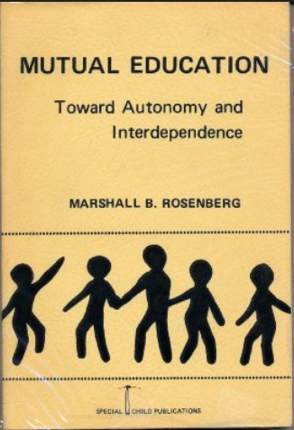
Mutual Education: Toward Autonomy and Interdependence
Переломний етап. Розенберг повністю відмовляється від ярликів та діагнозів. Він вводить свій головний філософський прорив: концепцію «Влада З...» (Power with) замість «Влади НАД...» (Power over). Традиційна школа використовує покарання та оцінки, щоб змусити дітей слухатися. Розенберг заявляє, що вчитель та учень мають різний досвід, але абсолютно рівну людську гідність. Навчання має бути діалогом.
A Manual for "Responsible" Thinking and Communicating
Це «Святий Грааль» ННС — найперший, чорновий прототип методу (всього 55 сторінок). Написаний не від хорошого життя, а як екстрений польовий інструмент. У США йшов процес десегрегації шкіл, що супроводжувався масовими бійками та різаниною між білими та чорношкірими підлітками. Розенберг працював там медіатором і зрозумів: люди хочуть домовитися, але їхня мова фізично не дозволяє їм це зробити. У цій брошурі він вперше накидав знамениту 4-крокову модель.
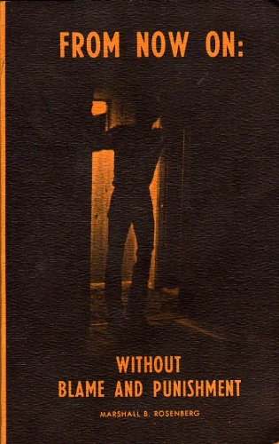
From Now On (Відтепер)
Масштабна «робота над помилками». Розенберг зміщує фокус від «відповідальності» до «відсутності звинувачень і покарань». Він вводить надважливу різницю між істинними почуттями та «псевдопочуттями». Фрази на кшталт «Я відчуваю, що ти мене не поважаєш» — це не почуття, це приховане звинувачення. Також тут з'являється акцент на «емпатичному слуханні» — вмінні подумки перекладати агресію співрозмовника на мову його незадоволених потреб.
Історична паралель: ФБР vs. Розенберг (1975–1980)
Цікаво порівняти підхід Розенберга з розвитком державних структур переговорів у США. До початку 1970-х у ФБР не було переговірників (був лише штурм). Коли вони з'явилися, їх вчили методу «Стримування та переговори»: тягнути час, бути раціональними, шукати компроміс, відокремлювати емоції від проблеми.
Розенберг у цей же час на вулицях інтуїтивно намацав те, до чого ФБР (і Кріс Восс у книзі «Ніяких компромісів») прийде лише через 30 років — «тактичну емпатію». Розенберг вчив: емоції — це ключ. Базові людські потреби не підлягають торгу. Компроміс — це прихована поразка. Агресія — це не прояв зла, а трагічне вираження болю.
Ідеологічними братами Розенберга в ті роки були Карл Роджерс, Томас Гордон (автор «Я-висловлювань»), дипломат Джон Бьортон (Теорія людських потреб) та ідеологи Відновного правосуддя (Ховард Зер).
A Model for Nonviolent Communication
Лише 35 сторінок. Маніфест і кишеньковий довідник. Нарешті метод отримав своє історичне ім'я — Nonviolent Communication (NVC), надихнувшись концепцією «Ахімси» (ненасильства) Махатми Ганді. Книга розліталася на семінарах пачками. Залізобетонно закріпилися 4 кроки: Спостереження, Почуття, Потреба, Прохання.
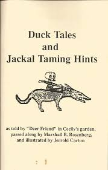
Duck Tales and Jackal Taming Hints (Качині історії та поради з приборкання шакала)
У 51 рік Розенберг остаточно відмовився від академічної серйозності. Цей буклет — 24-сторінкова ілюстрована казка для дорослих. Розенберг зрозумів: щоб обійти психологічні захисти дорослих людей, потрібен гумор і метафори.
Біологія Жирафа і Шакала: Чому саме ці тварини? У жирафа найбільше серце серед наземних ссавців. Довга шия дозволяє бачити перспективу. А слина жирафа містить ферменти, які дозволяють йому перетравлювати колючки — це метафора емпатії, здатності вислухати колючі слова і не поранитися. Шакал же бігає низько, короткозорий (реагує реактивно) і харчується падлом — як наше Его, що живиться пошуком чужих помилок.
Чому ілюстрації були вісцеральними (і навіть сексуалізованими)? Малюнки художника-сюрреаліста Джерролда Картона в стилі андеграундних коміксів 70-х виглядають гротескно. Це було зроблено навмисно. Шакал — це метафора нашого Его, наших базових інстинктів домінування. Тілесність ілюстрацій символізувала наші нефільтровані, тваринні реакції у стресі. Тоді ННС ще не було «корпоративним і стерильним», воно було сирим і провокаційним.
У 1984 році Маршалл заснував Центр Ненасильницького Спілкування (CNVC). Спочатку це була невелика мережа однодумців, яка з роками перетворилася на міжнародну організацію. Примітно, що за життя Маршалла сертифікація тренерів була неформальним реляційним процесом — він сам вирішував, хто готовий нести метод далі, на основі особистої довіри. Після його смерті CNVC перейшов до більш глобально координованої системи з офіційними критеріями сертифікації.
Руанда та «Швець без чобіт»
Після 1986 року в бібліографії Розенберга сталася пауза на 13 років. Він не писав, бо буквально жив на валізах (по 250 днів на рік у дорозі). Його міротворча робота охоплювала десятки країн: Руанда, Бурунді, Нігерія, Шрі-Ланка, Сербія, Хорватія, Близький Схід, Північна Ірландія, Колумбія. Він працював з вождями племен, що вбивали одне одного, з жертвами геноциду, з біженцями, з колишніми комбатантами.
У Палестині, під час виступу в таборі біженців, чоловік скочив і закричав йому: «Вбивця! Дітовбивця!» (через те, що Маршалл — американець). Розенберг не став захищатися. Він 20 хвилин емпатично перекладав лють чоловіка на мову потреб («Ви в розпачі, бо хочете підтримки і свободи?»). У підсумку цей же чоловік запросив Маршалла до себе на вечерю.
Сімейна драма: При цьому в особистому житті Маршалл був складною людиною. Він був одружений тричі. А коли він намагався застосовувати перші напрацювання ННС на своїх дітях, вони відчували фальш. Його син якось сказав: «Тату, будь ласка, просто нагримай на мене як нормальний батько, досить використовувати на мені цю психологічну хрінь!» Це навчило Маршалла, що ННС не можна використовувати як інструмент маніпуляції.
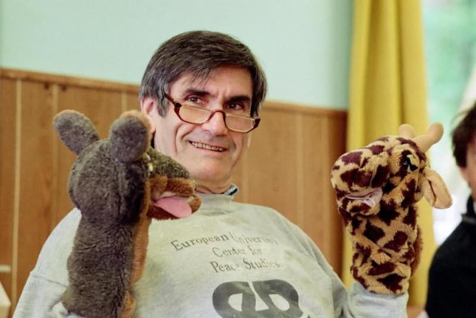

Nonviolent Communication: A Language of Compassion / Life
Magnum Opus. Головний бестселер. Книга на 200+ сторінок, яка вирішила «проблему робота». Розенберг пояснив: алгоритм — це ніщо без правильного наміру. Якщо ви використовуєте 4 кроки, щоб змусити людину зробити по-вашому — це насильство. Мета ННС — створити якість зв'язку, за якої рішення знайдеться само.
Він також ввів концепцію Самоемпатії (Self-Empathy): неможливо давати емпатію іншим, якщо ти всередині повен самокритики. Книгу випустило спеціально створене видавництво PuddleDancer Press, щоб захистити бренд.

Life-Enriching Education
Повернення до витоків та замикання кола. У 68 років, маючи за плечима досвід медіацій у Руанді та на Близькому Сході, всесвітньо визнаний гуру повертається туди, звідки починав у 1968-му (Diagnostic Teaching) — до шкільного класу. Але тепер він приходить не як молодий психолог, що шукає метод, а як майстер із досконалим інструментом.
Школи як «Фабрики Шакалів». Провівши десятиліття в гарячих точках, Розенберг зрозумів страшну річ: війни та насильство починаються за шкільною партою. Він усвідомив, що традиційна система освіти — це конвеєр з виробництва «Шакалів», який вчить дітей:
- Підкорятися авторитету (вчителю), ігноруючи власні потреби.
- Боятися покарання (поганої оцінки, виклику батьків).
- Конкурувати одне з одним (хто краще складе тест, хто отримає нагороду).
- Мислити чорно-білими категоріями «правильно/неправильно», «нормально/ненормально».
Розенберг зрозумів: марно мирити дорослих політиків та бойовиків, якщо школи продовжують штампувати людей, навчених мові домінування. Ця книга стала планом із демонтажу такої системи.
Бунт проти оцінок та нагород. Багато хто очікував методичку про те, «як змусити дітей краще вчитися і не шуміти». Натомість книга виявилася абсолютно бунтарською. Розенберг обрушився на найсвятішу корову освіти — оцінки. Він заявив, що використання нагород (п'ятірок, золотих зірочок) та покарань (двійок, позбавлення привілеїв) — це форма насильства. Це зовнішня мотивація, яка вбиває в дитині природну, вроджену радість від пізнання світу. Він ставив вчителям жорстке запитання: «Чого ви хочете: щоб дитина зробила те, що ви просите, зі страху чи заради нагороди, — або щоб вона зробила це, бо сама бачить у цьому цінність?»
Еволюція ідей 1972 року: «Партнерська освіта». У цій книзі Розенберг нарешті довів до ідеалу ідеї, які намагався сформулювати ще 30 років тому в Mutual Education. Він чітко розділив школи на два типи:
- Школи домінування (Domination Schools): Побудовані на парадигмі «Влада НАД» (Power over). Вчитель — начальник, учень — підлеглий. Головна цінність — сліпа слухняність.
- Школи партнерства (Life-Enriching Schools): Побудовані на парадигмі «Влада З» (Power with). Вчитель і учень разом створюють правила. Головна цінність — взаємна повага до потреб одне одного.
Книга не була суто теоретичною. Вона давала вчителям конкретні ННС-скрипти: як висловити своє розчарування шумом у класі, не кричачи на дітей; як учням самостійно вирішувати конфлікти на перерві без бійок та втручання директора; і як разом, у партнерстві, складати навчальний план.
Епоха «Спін-оффів» (2004–2005)
Люди почали питати: «А як застосувати ННС конкретно до дітей? А до гніву?». І Розенберг (через транскрипти своїх лекцій) випускає серію модульних брошур-додатків:

Raising Children Compassionately (Виховання дітей у дусі співчуття)
Унікальність: Перенесення фокусу з дорослих на дітей. Розенберг жорстко критикує систему «тайм-аутів», позбавлення солодкого та будь-яких покарань. Він вводить надважливе поняття «захисне застосування сили»: фізичну силу до дитини можна застосовувати лише щоб врятувати її (висмикнути з-під авто), але ніколи — щоб покарати чи навчити.
Реакція: Прогресивні батьки, втомлені від криків, отримали інструмент домовляння без ламання волі. Проте традиційні педагоги обрушилися з критикою, вважаючи концепцію «ніколи не змушуйте дитину робити те, чого вона не хоче» утопією, яка виховає розбещених егоїстів (хоча сам Розенберг наголошував, що ННС — це не вседозволеність).
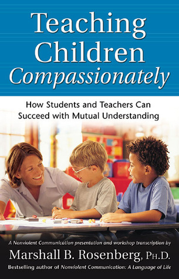
Teaching Children Compassionately (Навчання зі співчуттям)
Унікальність: Брошура, що адаптує принципи ННС спеціально для шкільних вчителів. Вона стала логічним продовженням Life-Enriching Education, пропонуючи конкретні скрипти для створення в класі атмосфери взаєморозуміння, де учні вчаться не через страх перед оцінкою, а через внутрішню мотивацію та повагу до потреб одне одного.
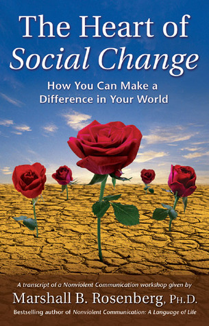
The Heart of Social Change (Серце соціальних змін)
Унікальність: Керівництво для активістів, екологів та правозахисників. Розенберг вчив: якщо ви боретеся проти корпорацій чи диктаторів, ненавидячи їх — ви лише множите насильство у світі. Неможливо створити мирний світ інструментами війни.
Реакція: Ця філософія стала рятівним колом для багатьох активістів, врятувавши їх від професійного вигорання, депресії та відчуття безсилля перед великою системою.
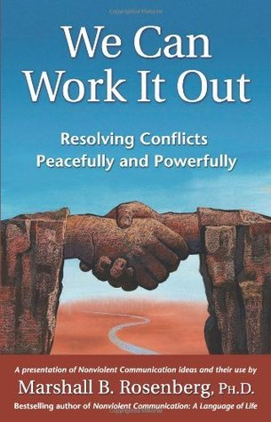
We Can Work It Out (Ми можемо з цим розібратися)
Унікальність: Максимально стислий та практичний посібник із вирішення міжособистісних конфліктів мирним шляхом. Розенберг дає покрокову інструкцію, як залишатися в контакті зі своїми потребами, коли співрозмовник переходить на крик, звинувачення або маніпуляції.
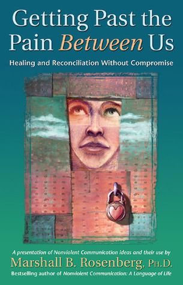
Getting Past the Pain Between Us (Долаючи біль між нами)
Унікальність: Брошура про зцілення застарілих образ, зрад та болю у стосунках. Головний прорив Розенберга тут: вам не потрібні вибачення, щоб пробачити. Більше того, він вважав класичне слово «вибач» (I'm sorry) шкідливим, оскільки воно просякнуте почуттям провини і мовою Шакала. Замість вибачень він вчив висловлювати «трагічний жаль» (tragic sorrow) про те, що твої дії не задовольнили потреби партнера.

The Surprising Purpose of Anger (Дивовижна мета гніву)
Унікальність: Абсолютний хіт серії, що перевертає традиційний «Anger Management» з ніг на голову. Гнів не треба придушувати, «видихати» чи бити подушку. Гнів — це подарунок, сигналізація, яка кричить про те, що ваша життєво важлива потреба не задоволена, а мозок у цей час зайнятий звинуваченням іншого.
Реакція: Ідея зняла з людей величезне почуття провини за власну агресію. Проте на практиці багатьом було фізично складно в момент люті зупинитися і почати шукати свою потребу — метод вимагав колосальної усвідомленості.
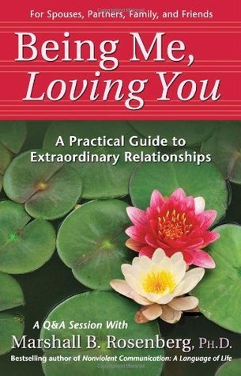
Being Me, Loving You (Бути собою, люблячи тебе)
Унікальність: Фокус виключно на романтичних та партнерських стосунках. Як любити людину, але не розчинятися в ній? Як сказати «Ні» партнеру, не руйнуючи емоційний зв'язок? Розенберг пояснює ключову ідею здорових стосунків: ми не несемо відповідальності за емоції нашого партнера (але при цьому глибоко дбаємо про його потреби).

Practical Spirituality (Практична духовність)
Унікальність: Розенберг вперше відкрито і концентровано говорить про релігійно-філософське коріння ННС. Він пояснює, що його метод — це не просто техніка переговорів чи софт-скілл, це духовна практика з'єднання з «Божественною енергією» (енергією безумовної любові та співчуття).
Реакція: Ця брошура відлякала корпоративний сектор та переконаних атеїстів. Багатьом бізнес-тренерам довелося свідомо приховувати цю частину філософії Розенберга, щоб метод не виглядав для керівників компаній як «езотерична секта».

Speak Peace in a World of Conflict (Говоріть мирно у світі конфліктів)
Унікальність: На відміну від інших брошур, це повноцінна товста книга (близько 200 сторінок). Геополітичний та соціальний маніфест 71-річного Розенберга. Тут він узагальнює свій досвід роботи в Руанді, Сербії, Ізраїлі та показує, як застосовувати ННС на макрорівні: для реформування в'язниць, судів, корпорацій та урядів.
Реакція: Книга викликала жорстку критику з боку політологів та класичних переговірників. Розенберга звинувачували в наївності, стверджуючи, що неможливо зупинити терориста чи диктатора, просто «зрозумівши його потреби». Йому закидали, що метод ідеальний для сімейної кухні, але ламається при зіткненні з державним фашизмом або соціопатами, у яких емпатія відсутня на біологічному рівні.
ННС в Україні та Росії: Від езотерики до окопів
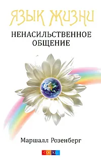
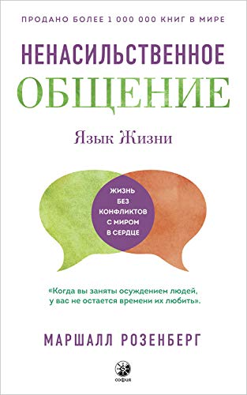
Язык жизни. Ненасильственное общение
Перше російське видання вийшло 2009 року (перевидали з 2018 з новим перекладом) у «Софія» — тоді невеликому московському видавництві, що спеціалізувалося на езотеричній літературі та містиці. Це була не масова книга, яка пішла у магазин аудиторії нью-ейджу. Але завдяки піратству файл pdf дозволив багатьом дізнатися про метод.
Маршалл ніколи не був ні в Росії, ні в Україні. Головним «апостолом» методу стала угорська тренерка Ева Рамбала (evarambala.com), яка роками їздила з семінарами до Києва та Москви, знімаючи з методу езотеричний наліт.
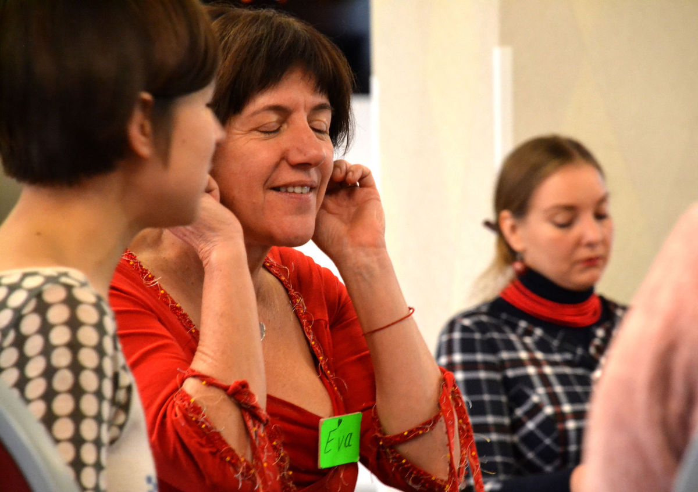
Розходження шляхів (з 2014 року):
- В Росії: ННС пішло шляхом корпоративного софт-скіллу (для Agile та Scrum-майстрів в IT) та інструменту для прогресивних батьків. Після 2022 року, в умовах тотальної цензури, метод став «внутрішнім бункером» — способом спілкуватися з родичами, отруєними пропагандою, та зберігати власний глузд.
- В Україні: Революція Гідності та війна вимагали інших рішень. Олена Ганцяк-Каськів (ГО «Простір Гідності») запросила данського медіатора Карла Плеснера. Вони створили Школу Інженерів Порозуміння (Peace Engineers), відправляючи навчених ННС медіаторів у сірі зони, до переселенців та ветеранів.
Паралельно, величезну роботу з масової освіти взяла на себе команда Катерини Ясько (ГО «Міжнародний інститут інтегрального розвитку»). Вони створили портал Empatia.pro (субдомен nvc.empatia.pro був офіційною сторінкою приїздів Еви Рамбали). Ця команда системно впроваджувала емпатію в Нову Українську Школу (НУШ) та розбирала поп-культуру через призму емоційного інтелекту.
З 2022 року в Україні ННС — це не про наївну «емпатію до ворога» (що є формою психологічного насильства), а про самоемпатію та внутрішню підтримку громади на тлі жахливої травми.
Остання книга: Практичний заповіт

Living Nonviolent Communication
У 2012 році виходить Living Nonviolent Communication — пізня практична компіляція його підходу, збірник його «Greatest Hits», випущений видавництвом Sounds True. Вона перетворила розрізнені брошури на єдиний практичний workbook (робочий зошит). Це був його практичний заповіт: «Я більше не можу вести вас за руку. Ось вам повний набір ключів — далі ви самі».
Спадщина Маршалла
Маршалл Розенберг пішов з життя 7 лютого 2015 року у віці 80 років. У цей момент у світі палала війна в Сирії, набирав силу ІДІЛ, йшла війна на Донбасі. Насильства було більше, ніж будь-коли. Чи помер він у відчаї?
Ні. Він часто повторював: «Культурі домінування (мові Шакала) близько 8000 років». Він не мав ілюзій, що змінить світ за одне життя. Він просто сіяв насіння. Його духовною опорою був принцип: «Don’t do anything that isn't play» (Не роби нічого, що не приносить радості). Він кайфував від розплутування конфліктів.
Коли він помер, спільнота не занурилася у чорний траур. В ННС є концепція горювання (mourning) — це глибоке з'єднання з прекрасною потребою, яка більше не задовольняється. Замість некрологів Центр CNVC запустив кампанію «Святкування життя Маршалла». Люди по всьому світу збиралися і плакали від вдячності за врятовані шлюби та життя.
Маршалл Розенберг не залишив після себе політичної партії чи релігійної секти. Він залишив після себе МОВУ. А мову неможливо вбити, поки є люди, які нею розмовляють.